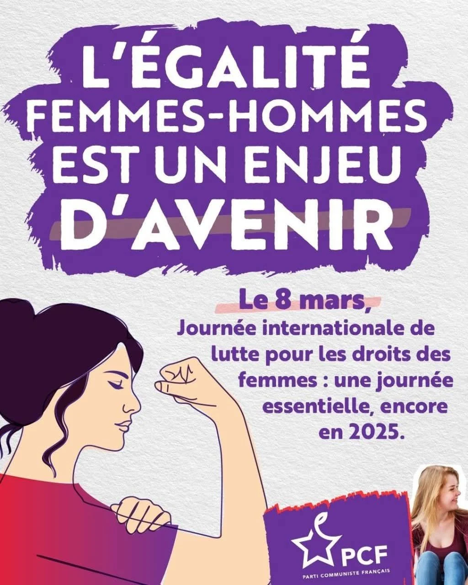

Visuel du PCF
8 Mars. « L’égalité femmes-hommes est un enjeu d’avenir »
Date indiquée par Facebook · 7 mars 2025
Repères éditoriaux
À la veille du 8 mars 2025, nous avons relayé le visuel du PCF pour la Journée internationale de lutte pour les droits des femmes. Son message affirme que l’égalité reste un enjeu d’avenir.

Sources
Archive rouge · document diffusé sur Facebook · AR-0002-FB-01175
À lire aussi · À Niort, appel à se rassembler en mémoire de Lyhanna et en soutien aux victimes